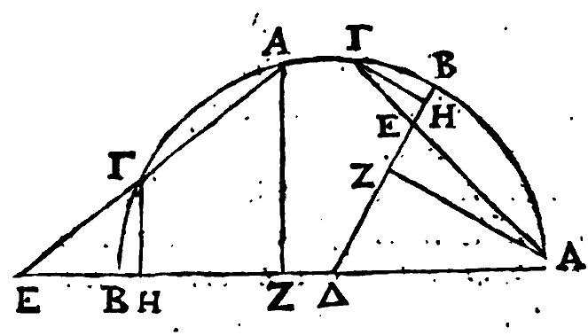

Lemma II — The Chord-Sine Projection Lemma¶
Menelai Alexandrini Sphaericorum Lib. III Lemma II (Halley 1758, pp. 83–84)
Enunciation (Halley 1758, pp. 83–84)
If in a circle any straight line drawn from the center divides any arc and its subtending chord, the segments of the subtending chord shall be proportional to the sines of the segments of the arc.
For let there be circle \(\mathrm{AB\Gamma\Delta}\), in which let straight line \(\mathrm{A\Gamma}\) subtend some arc, and from center \(\mathrm{\Delta}\) let straight line \(\mathrm{\Delta B}\) be drawn in any manner meeting the subtending chord at \(\mathrm{E}\) and the arc at \(\mathrm{B}\); and let perpendiculars
f. 0100 · p. 84

\(\mathrm{AZ}, \mathrm{\Gamma H}\) be dropped onto \(\mathrm{\Delta B}\): I say that \(\mathrm{AZ}\) is to \(\mathrm{\Gamma H}\)—that is, the sine of arc \(\widehat{\mathrm{AB}}\) to the sine of arc \(\widehat{\mathrm{\Gamma B}}\)—as \(\mathrm{AE}\) is to \(\mathrm{E\Gamma}\).
For since straight lines \(\mathrm{AZ}, \mathrm{\Gamma H}\) are perpendicular to the same straight line \(\mathrm{\Delta B}\), triangles \(\triangle \mathrm{AEZ}\) and \(\triangle \mathrm{\Gamma EH}\) will be similar; and therefore as \(\mathrm{AE}\) is to \(\mathrm{E\Gamma}\), so is \(\mathrm{AZ}\) to \(\mathrm{\Gamma H}\); and so is the sine of arc \(\widehat{\mathrm{AB}}\) to the sine of arc \(\widehat{\mathrm{\Gamma B}}\). Quod erat demonstrandum.
And it is manifest that the matter stands in the same way if the straight line from the center meet the subtending chord produced outside the circle.